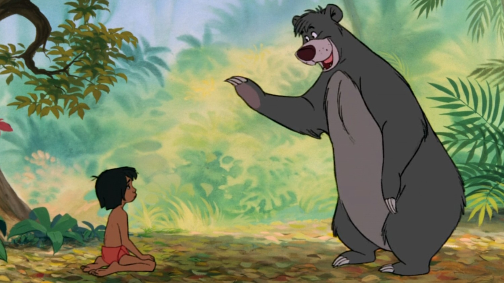

„გემთწამყვანი ვილი“ ისტორიაში ერთ-ერთი ყველაზე მნიშვნელოვანი ანიმაციური მოკლემეტრაჟიანი ფილმია და მიკი მაუსის ოფიციალურ დებიუტს წარმოადგენს. მულტფილმი ასახავს მიკის, რომელიც მართავს ორთქლმავალ გემს და გზადაგზა მუსიკალურ ქაოსს ქმნის. ეს იყო ერთ-ერთი პირველი მულტფილმი სინქრონიზებული ხმით, რამაც იგი მაშინვე გამოარჩია კონკურენტებისგან. მიკის მხიარულმა ხასიათმა ის სწრაფად აქცია დისნეის თილისმად. ამ ფილმის წარმატება დაეხმარა უოლტ დისნეის რთულ მდგომარეობაში მყოფი სტუდიის გადარჩენაში. საინტერესოა, რომ მიკის სტვენის მელოდია მულტფილმების ერთ-ერთი პირველი ცნობადი ხმოვანი მოტივი გახდა.

მიკი მაუსის ორიგინალურმა მოკლემეტრაჟიანმა ფილმებმა ჩამოაყალიბა დისნეის ანიმაციური სტილი და თხრობის რიტმი. ეს მულტფილმები გამოირჩეოდა სლაპსტიკური (უხეში) იუმორით, ექსპრესიული ანიმაციითა და მარტივი თავგადასავლებით. დროთა განმავლობაში მიკი ცელქი მაწანწალიდან მეგობრულ გმირად გარდაიქმნა. ამ სერიებმა დისნეის პერსონაჟთა ანიმაციისა და ტაიმინგის დახვეწაში შეუწყო ხელი. ბევრი კლასიკური პერსონაჟი, როგორიცაა მინი, პლუტო და გუფი, რეგულარულად ჩნდებოდა ეკრანზე. ამ მულტფილმებმა ჩაუყარა საფუძველი დისნეის მთელ მომავალ ანიმაციას.

„ფიფქია და შვიდი ჯუჯა“ იყო დისნეის პირველი სრულმეტრაჟიანი ანიმაციური ფილმი, რომელმაც სამუდამოდ შეცვალა კინემატოგრაფი. სიუჟეტი მოგვითხრობს ფიფქიაზე, რომელიც გაურბის თავის ეჭვიან დედინაცვალს და თავს აფარებს შვიდ ჯუჯას. მაყურებელს მანამდე არასდროს ენახა ანიმაცია, რომელიც ასეთ ემოციურ და სრულყოფილ ისტორიას ჰყვებოდა. ფილმი იყო უდიდესი ფინანსური რისკი, რომელმაც წარმოუდგენლად გაამართლა. მისმა წარმატებამ დაამტკიცა, რომ ანიმაციას შეეძლო კონკურენცია გაეწია მხატვრული ფილმებისთვის. მან ასევე დააფინანსა დისნეის მომავალი პროექტები და გაფართოება.

„პინოქიო“ მოგვითხრობს ხის თოჯინაზე, რომელიც ოცნებობს გახდეს ნამდვილი ბიჭი. ჯიმინი კრიკეტის (ჭრიჭინას) მეთვალყურეობით, პინოქიომ უნდა ისწავლოს პატიოსნება და სიმამაცე. ფილმი ცნობილია თავისი ბნელი თემებითა და მორალური გაკვეთილებით. მისი ანიმაცია, განსაკუთრებით წყლისა და განათების ეფექტები, რევოლუციური იყო. სიმღერა „When You Wish Upon a Star“ დისნეის ჰიმნად იქცა. დღეს იგი მიიჩნევა დისნეის ერთ-ერთ ყველაზე ამბიციურ მხატვრულ ნამუშევრად.

„ფანტაზია“ არის გაბედული ექსპერიმენტი, რომელიც აერთიანებს კლასიკურ მუსიკასა და ანიმაციურ თხრობას. ერთიანი ნარატივის ნაცვლად, იგი წარმოადგენს ცნობილი მუსიკალური ნაწარმოებების რამდენიმე ვიზუალურ ინტერპრეტაციას. მიკი მაუსი ჩნდება ჯადოქრის მოწაფის როლში ერთ-ერთ ყველაზე საკულტო სეგმენტში. ფილმმა შემოიტანა მოცულობითი ხმის ადრეული ფორმა, სახელწოდებით Fantasound. მიუხედავად იმისა, რომ თავიდან ის ვერ გაიგეს, დროთა განმავლობაში მან ლეგენდარული სტატუსი მოიპოვა. „ფანტაზიამ“ აჩვენა, რომ ანიმაცია შეიძლება იყოს აბსტრაქტული და არტისტული.

„დამბო“ მოგვითხრობს პატარა სპილოზე, რომელსაც დიდი ყურების გამო დასცინიან, თუმცა შემდეგ აღმოაჩენს, რომ ფრენა შეუძლია. ფილმი ფოკუსირებულია ემოციებზე და არა რთულ სიუჟეტზე. მასში წინა პლანზეა მიღებისა და შინაგანი სიძლიერის თემები. დამბოს მეგობრობა თაგვ ტიმოთისთან ისტორიის მთავარი მამოძრავებელი ძალაა. ფილმის წარმოება იაფი დაჯდა, თუმცა ძალიან წარმატებული გამოდგა. მისი სიმარტივე არის ის, რაც მას მარადიულს ხდის.

„ბემბი“ ასახავს ტყეში გაზრდილი პატარა ირმის ცხოვრებას. ფილმი ხაზს უსვამს ბუნებას, ზრდასა და დანაკარგს. დისნეის ანიმატორები სწავლობდნენ ნამდვილ ცხოველებს, რათა მიეღწიათ მოძრაობის რეალისტურობისთვის. მისმა ერთ-ერთმა ყველაზე ცნობილმა სცენამ მაყურებელზე უდიდესი ემოციური გავლენა მოახდინა. მიუხედავად იმისა, რომ თავიდანვე ჰიტი არ გამხდარა, დროთა განმავლობაში კრიტიკოსების დიდი აღიარება მოიპოვა. „ბემბიმ“ გავლენა მოახდინა ანიმაციაში გარემოსდაცვითი თემების წინ წამოწევაზე.
.jpg)
„იხვის ზღაპრები“ მოგვითხრობს სკრუჯ მაკდაკისა და მისი დისშვილების თავგადასავლებს განძზე ნადირობისას. სერიალი აერთიანებდა იუმორს, მოქმედებასა და მოგზაურობებს მთელ მსოფლიოში. ის დაეხმარა დისნეის, ჩამოყალიბებულიყო როგორც სერიოზული კონკურენტი სატელევიზიო ანიმაციაში. პერსონაჟები უფრო რთულები იყვნენ, ვიდრე იმ ეპოქის ტიპიური მულტფილმები. სერიალის მთავარი მუსიკალური თემა მომენტალურად საკულტო გახდა. ითვლება, რომ სწორედ „იხვის ზღაპრებმა“ დაუდო სათავე დისნეის სატელევიზიო ანიმაციის რენესანსს.

„დარკვინგ დაკი“ არის სუპერგმირული პაროდია კრიმინალთან მებრძოლ იხვზე. შოუ აზავებს ექშენს, კომედიასა და თვითირონიულ იუმორს. დარკვინგის საიდუმლო ვინაობა პერსონაჟს სიღრმეს მატებს. სერიალმა მოიპოვა ძლიერი საკულტო აღიარება. იგი გამოირჩეოდა შედარებით ბნელი ტონით დისნეის სხვა მულტფილმებთან შედარებით და დღემდე პოპულარულია ერთგულ ფანებში.
.jpg)
„შესვენება“ ფოკუსირებულია დაწყებითი სკოლის მეგობრების ჯგუფზე, რომლებიც სათამაშო მოედნის „პოლიტიკაში“ ერკვევიან. თითოეული ეპიზოდი ასახავს ბავშვობის რეალურ სოციალურ დინამიკას. შოუ ბავშვებს წარმოაჩენს როგორც ჭკვიან და უნარიან პიროვნებებს. იგი შეაქეს იუმორისა და რეალისტურობის გამო. მასწავლებლები და უფროსები კომედიური ეფექტისთვის გაზვიადებულად არიან ნაჩვენები. „შესვენება“ რჩება დისნეის ერთ-ერთ ყველაზე ცხოვრებისეულ სერიალად.
 (2).jpg)
სერიალი მოგვითხრობს ორ ნახევარძმაზე, რომლებიც ზაფხულის არდადეგებზე წარმოუდგენელ გამოგონებებს ქმნიან. ყოველ ეპიზოდს აქვს ჭკვიანური, განმეორებადი სტრუქტურა. შოუ აერთიანებს მუსიკალურ ნომრებსა და კომედიას. მისი იუმორი როგორც ბავშვებს, ისე უფროსებს იზიდავს. სერიალი დისნეის ერთ-ერთი ყველაზე წარმატებული თანამედროვე მულტფილმი გახდა.

„გრავითი ფოლსი“ მოგვითხრობს ტყუპების, დიპერისა და მეიბლის შესახებ, რომლებიც საიდუმლოებით მოცულ ქალაქში იმყოფებიან. სერიალი აერთიანებს კომედიასა და ზებუნებრივ მისტიკას. სიუჟეტური ხაზი ვითარდება ეპიზოდიდან ეპიზოდში, რაც იმ დროის დისნეის მულტფილმებისთვის უჩვეულო იყო. მან მიიზიდა როგორც ბავშვები, ისე უფროსი აუდიტორია. ფარულმა კოდებმა და საიდუმლოებებმა ფანების უამრავ თეორიას ჩაუყარა საფუძველი.

„სამი კაბალერო“ არის ფერადი მუსიკალური ფილმი, რომელშიც დონალდ დაკი ხოსე კარიოკასა და პანჩიტო პისტოლესთან ერთად მონაწილეობს. სიუჟეტი მუსიკის, მოგზაურობისა და მეგობრობის მეშვეობით ლათინოამერიკულ კულტურას განადიდებს. დონალდი იღებს დაბადების დღის საჩუქრებს, რომლებიც მას ბრაზილიასა და მექსიკაში სიურეალისტურ თავგადასავლებში ათრევს. ფილმი აერთიანებს ტრადიციულ ანიმაციას ექსპერიმენტულ ვიზუალურ სტილთან. იგი შეიქმნა, როგორც დისნეის კეთილი ნების გამოხატვა მეორე მსოფლიო ომის დროს. მისმა გაბედულმა ვიზუალმა გავლენა მოახდინა დისნეის შემდგომ მხატვრულ ექსპერიმენტებზე.

„დაუკარით ჩემი მუსიკა“ არის ნაკრები ფილმი, რომელიც შედგება მუსიკაზე გაფორმებული ანიმაციური სეგმენტებისგან. თითოეული სეგმენტი სხვადასხვა ისტორიას ჰყვება, კომედიიდან დაწყებული რომანტიკით დამთავრებული. ფილმი იმ პერიოდში შეიქმნა, როდესაც ომის შემდეგ დისნეის რესურსები შეზღუდული ჰქონდა. მუსიკა აქ ცენტრალურ როლს ასრულებს და ის მართავს ანიმაციას და არა დიალოგები. ფილმმა დაეხმარა დისნეის ანიმაციას გადარჩენილიყო ფინანსურად რთულ ეპოქაში. იგი ასახავს დისნეის მზაობას ფორმატთან ექსპერიმენტებისთვის.

ეს არის კიდევ ერთი ნაკრები ფილმი, რომელიც ორი მთავარი ანიმაციური ისტორიიდან შედგება. ერთი სეგმენტი „ჯეკი და ლობიოს ღეროს“ გადამუშავებაა, ხოლო მეორეში მიკი მაუსი მონაწილეობს „ბონგოში“. მიკის გამოჩენამ ხელი შეუწყო დისნეის თილისმისადმი ყურადღების დაბრუნებას. ფილმი აზავებს იუმორს ზღაპრულ თავგადასავალთან. იგი ასევე მოიცავს მხატვრულ თხრობას (live-action), რომელიც ანიმაციურ სეგმენტებს აერთიანებს. ეს ფილმი მიკის ერთ-ერთი ყველაზე მნიშვნელოვანი ომისშემდგომი როლი იყო.

„მელოდიების დრო“ მოიცავს შვიდ ანიმაციურ მუსიკალურ სეგმენტს, რომლებიც შთაგონებულია ხალხური ზღაპრებითა და სიმღერებით. ისტორიების ტონი მკვეთრად განსხვავდება ერთმანეთისგან — მხიარულიდან ემოციურამდე. სეგმენტების უმეტესობაში მუსიკა და თხრობა ანაცვლებს ტრადიციულ დიალოგებს. ფილმმა გააგრძელა დისნეის „ნაკრები ფილმების“ ეპოქის სტრატეგია. მან ანიმატორებს საშუალება მისცა ეცადათ ახალი სტილი და ტექნიკა. რამდენიმე სეგმენტი მოგვიანებით პოპულარულ დამოუკიდებელ მოკლემეტრაჟიან ფილმად იქცა.

ეს ფილმი აერთიანებს ორ ლიტერატურულ ადაპტაციას: „ქარი ტირიფებში“ და „ლეგენდა მძინარე ხეობის შესახებ“. მისტერ ტოადის სეგმენტი ფოკუსირებულია კომედიასა და ოინებზე. იკაბოდ კრეინის ისტორია კი უფრო საშინელ ატმოსფეროსა და დაძაბულობაზეა ორიენტირებული. ფილმი უნიკალურად აბალანსებს იუმორსა და სიბნელეს. მან მონიშნა დისნეის „ნაკრები ფილმების“ ეპოქის დასასრული. ამის შემდეგ დისნეი დაუბრუნდა სრულყოფილ ნარატიულ სრულმეტრაჟიან ფილმებს.

„კონკია“ მოგვითხრობს კეთილ გოგონაზე, რომელსაც დედინაცვალი და მისი ოჯახი ჩაგრავს და რომელიც უკეთეს ცხოვრებაზე ოცნებობს. კეთილი ფერიის დახმარებით ის ესწრება სამეფო მეჯლისს და ცვლის თავის ბედს. ფილმი ხაზს უსვამს მოთმინებას, სიკეთესა და იმედს. მისმა წარმატებამ ფინანსურად გადაარჩინა დისნეის სტუდია. რეალიზმისთვის ანიმაციაში ფართოდ გამოიყენებოდა რეალური გადაღებების კადრები. „კონკიამ“ საფუძველი ჩაუყარა დისნეის ზღაპრების აღორძინებას.

ფილმი ლუის კეროლის სიურეალისტურ ფანტაზიას ანიმაციურ ფორმაში გარდასახავს. ალისა ხვდება უცნაურ სამყაროში, რომელიც სავსეა უჩვეულო პერსონაჟებითა და ალოგიკური წესებით. ფილმში გამოყენებულია მკვეთრი ფერები და გაზვიადებული დიზაინი. თავიდან იგი გააკრიტიკეს თავისუფალი სტრუქტურის გამო, თუმცა დროთა განმავლობაში საკულტო პოპულარობა მოიპოვა. დღეს მას აფასებენ კრეატიულობისა და წარმოსახვის გამო.

„პიტერ პენი“ მოგვითხრობს ბიჭზე, რომელიც უარს ამბობს გაზრდაზე და ცხოვრობს ნევერლენდში. მას ვენდი და მისი ძმები ჯადოსნურ თავგადასავალში მიჰყავს. ფილმი იკვლევს ბავშვობას, ფანტაზიასა და თავისუფლებას. კაპიტანი ჰუკი ერთდროულად სასაცილო და საშიში ბოროტმოქმედია. ფრენის სცენები იმ დროისთვის რევოლუციური იყო. ეს ისტორია დისნეის ერთ-ერთ ყველაზე მყარ კლასიკად იქცა.

ეს არის რომანტიკული ისტორია ორ ძაღლზე, რომლებიც განსხვავებული სოციალური ფენებიდან არიან. მოქმედება მყუდრო უბანში ხდება და ყურადღებას სიყვარულსა და ერთგულებაზე ამახვილებს. სპაგეტის ვახშმის სცენა საკულტო გახდა. ეს იყო დისნეის პირველი ანიმაციური ფილმი ფართოეკრანიან CinemaScope ფორმატში. ფილმი აქცენტს ყოველდღიურ ცხოვრებაზე აკეთებს და არა ფანტაზიაზე. ის დაეხმარა დისნეის თხრობის სტილის გაფართოებას ზღაპრების მიღმა.

ფილმი პრინცესა ავრორასა და მალეფისენტას კლასიკური ზღაპრის ადაპტაციაა. იგი გამოირჩევა მაღალსტილიზებული, გეომეტრიული არტით, რომელიც შთაგონებულია შუა საუკუნეების ტაპესერებით. მისი ბნელი ტონი განასხვავებს მას ადრეული „პრინცესების“ ფილმებისგან. მალეფისენტა დისნეის ერთ-ერთი ყველაზე ცნობილი ბოროტმოქმედი გახდა. საწყისი არაერთგვაროვანი რეაქციის მიუხედავად, ფილმმა დროთა განმავლობაში დიდი აღიარება მოიპოვა. მისი ვიზუალური სტილი დღემდე შეუდარებელია.

ფილმი მოგვითხრობს ორ ძაღლზე, რომლებიც ცდილობენ თავიანთი მოპარული ლეკვების გადარჩენას კრუელა დე ვილისგან. ისტორია სწრაფი და თავგადასავლებით სავსეა. დისნეიმ გამოიყენა ქსეროგრაფია, რამაც სამუდამოდ შეცვალა ანიმაციის იერსახე. კრუელა საკულტო ბოროტმოქმედი გახდა თავისი გაზვიადებული პიროვნების გამო. ფილმის წარმოება უფრო იაფი დაჯდა, ვიდრე ადრეული კლასიკის. მან მოახდინა დისნეის ანიმაციის მოდერნიზაცია.

„ხმალი ქვაში“ მოგვითხრობს მეფე არტურის ბავშვობის ისტორიას. მერლინი ახალგაზრდა არტურს მაგიისა და იუმორის დახმარებით ასწავლის. ფილმი უფრო ეპიზოდურია, ვიდრე დრამატული. მისი მომხიბვლელობა პერსონაჟთა ურთიერთობებსა და კომედიაშია. ეს იყო ბოლო ანიმაციური ფილმი, რომელიც უოლტ დისნეის სიცოცხლეში გამოვიდა. ფილმი ასახავს თავად უოლტის პირად ღირებულებებს.

„ჯუნგლების წიგნი“ მოგვითხრობს მაუგლიზე, მგლების მიერ გაზრდილ ბიჭზე. ფილმი ხაზს უსვამს გართობას, მუსიკასა და პერსონაჟებზე დაფუძნებულ თხრობას. ისეთი პერსონაჟები, როგორიცაა ბალუ და შერხანი, საკულტო გახდა. ფილმი ძირეულად შეიცვალა უოლტ დისნეის შენიშვნების შემდეგ. საუნდტრეკმა დიდი როლი ითამაშა მის წარმატებაში. ეს იყო უკანასკნელი ფილმი, რომელსაც უოლტი პირადად ხელმძღვანელობდა.

სიუჟეტი ფოკუსირებულია პარიზელი კატების ოჯახზე, რომლებიც სახლში დაბრუნებას ცდილობენ. ფილმი აზავებს თავგადასავალს ჯაზით შთაგონებულ მუსიკასთან. ეს იყო დისნეის პირველი სრულმეტრაჟიანი ფილმი, რომელიც უოლტ დისნეის გარდაცვალების შემდეგ დასრულდა. ისტორია აქცენტს აკეთებს ოჯახსა და კუთვნილების გრძნობაზე. მსუბუქმა ტონმა ის პოპულარული გახადა ახალგაზრდა აუდიტორიაში. ჯაზის გავლენამ მას უნიკალური იდენტობა შესძინა.

ფილმი ლეგენდარულ ყაჩაღს მელიის სახით წარმოგვიდგენს. იგი ხაზს უსვამს იუმორსა და შარმს და არა რეალიზმს. ბევრი ანიმაციური კადრი ადრეული ფილმებიდან იყო გადმოტანილი, თუმცა, მიუხედავად ამისა, ის ფანების ფავორიტად იქცა. პერსონაჟების ხასიათებს მიჰყავთ სიუჟეტი წინ. იგი დღემდე უყვართ თავისი სითბოს გამო.

ეს ფილმი აერთიანებს პუჰის რამდენიმე მოკლემეტრაჟიან ფილმს. იგი გადმოსცემს „ას ჰექტარი ტყის“ მშვიდ სამყაროს. ყურადღება გამახვილებულია მეგობრობასა და წარმოსახვაზე. ანიმაციური სტილი წიგნის ილუსტრაციებს მოგვაგონებს. პუჰი დისნეის ერთ-ერთი ყველაზე მომგებიანი პერსონაჟი გახდა. ფილმი ყველა ასაკის მაყურებელს იზიდავს.

„მაშველები“ მოგვითხრობს ორ თაგვზე, რომლებიც იხსნიან გატაცებულ გოგონას. ისტორია აერთიანებს თავგადასავალსა და გულწრფელობას. მასში შემოტანილი იყო უფრო ბნელი თემები, ვიდრე ბევრ სხვა დისნეის ფილმში. პერსონაჟები სიმამაცეს იჩენენ მიუხედავად მათი სიმცირისა. ფილმმა გააღვიძა ინტერესი დისნეის ანიმაციის მიმართ და მოგვიანებით გაგრძელებაც (სიკველი) მიიღო.

ფილმი მოგვითხრობს უჩვეულო მეგობრობაზე მელასა და მონადირე ძაღლს შორის. როდესაც ისინი იზრდებიან, სოციალური როლები მათ აშორებს. ისტორია ფოკუსირებულია დანაკარგსა და გაზრდაზე. მან მონიშნა თაობათა ცვლა დისნეის ანიმატორებს შორის. მასზე დისნეის ბევრი მომავალი ლეგენდა მუშაობდა. ფილმი დასამახსოვრებელია თავისი ემოციური სიღრმით.

„შავი ქვაბი“ არის ბნელი ფენტეზი, რომელიც ეფუძნება „პრაიდენის ქრონიკებს“. იგი მოგვითხრობს ახალგაზრდა ბიჭზე, ტარანზე, რომელიც ცდილობს შეაჩეროს ბოროტი მმართველი მკვდართა არმიის აღდგენაში. ფილმი გამოირჩევა უფრო ბნელი ვიზუალით, ვიდრე მანამდე არსებული დისნეის ანიმაციები. მისი ტონი რადიკალურად განსხვავდებოდა დისნეის ტრადიციული სტილისგან. ფილმს გაუჭირდა გაქირავებაში და კინაღამ დაასრულა დისნეის ანიმაციის ისტორია, თუმცა დროთა განმავლობაში მან საკულტო სტატუსი მოიპოვა თავისი ამბიციურობის გამო.

ეს ფილმი შერლოკ ჰოლმსის რეიმანქიაა თაგვი დეტექტივის, ბაზილის სახით. სიუჟეტი ფოკუსირებულია ვიქტორიანულ ლონდონში მომხდარი გატაცების გახსნაზე. მან დისნეის ანიმაციას მისტიკა და ენერგია დაუბრუნა. ბოროტმოქმედი რატიგანი ერთ-ერთ გამორჩეულ პერსონაჟად იქცა. რთული სცენებისთვის გამოყენებული იქნა ადრეული კომპიუტერული გრაფიკა. ფილმი დაეხმარა დისნეის სტაბილურობის აღდგენაში რთული პერიოდის შემდეგ.

ეს არის „ოლივერ ტვისტის“ თანამედროვე ვერსია, რომლის მოქმედებაც ნიუ-იორკში ხდება. იგი მოგვითხრობს მაწანწალა კატაზე, რომელიც უერთდება ქუჩის ძაღლების ჯგუფს. ფილმში გამოყენებულია თანამედროვე მუსიკა და ურბანული გარემო. მან მონიშნა დისნეის გადასვლა თხრობის თანამედროვე სტილზე. ანიმაციაში შერწყმულია ტრადიციული და ციფრული ტექნიკა. მისმა წარმატებამ გზა გაუკაფა „დისნეის რენესანსს“.

ფილმი მოგვითხრობს არიელზე, ახალგაზრდა ქალთევზაზე, რომელიც ოცნებობს ხმელეთზე ცხოვრებაზე. ამ ნამუშევარმა აღადგინა დისნეის ზღაპრული მუსიკალური ფორმატი. არიელის ცნობისმოყვარეობამ და დამოუკიდებლობამ მაყურებლის დიდი მოწონება დაიმსახურა. ბოროტმოქმედი ურსულა მომენტალურად იქცა საკულტო პერსონაჟად. საუნდტრეკმა უდიდესი როლი ითამაშა ფილმის პოპულარობაში. ამ ფილმით ოფიციალურად დაიწყო „დისნეის რენესანსი“.

ეს გაგრძელება მიჰყვება მაშველთა საზოგადოებას ავსტრალიაში. თაგვები ეხმარებიან ბიჭის გადარჩენაში, რომელსაც სასტიკი ბრაკონიერი ემუქრება. ეს იყო დისნეის პირველი სრულად ციფრული „ink-and-paint“ მხატვრული ფილმი. ფილმში აქცენტი გაკეთდა ექშენსა და კინემატოგრაფიულ მოძრაობაზე. მიუხედავად იმისა, რომ დიდი ჰიტი არ გამხდარა, ის ტექნიკურად რევოლუციური იყო და აჩვენა დისნეის განვითარებადი ინსტრუმენტები.

ეს რომანტიკული ზღაპარი მოგვითხრობს ბელისა და დაწყევლილი პრინცის შესახებ. ისტორია ხაზს უსვამს სიყვარულს, სიკეთესა და შინაგან სილამაზეს. ფილმში გამოყენებული იყო ბროდვეის სტილის მუსიკალური ნომრები. სამეჯლისო სცენამ გააერთიანა ხელით შესრულებული ანიმაცია და CGI. იგი გახდა პირველი ანიმაციური ფილმი, რომელიც ნომინირებული იყო „ოსკარზე“ საუკეთესო სურათის კატეგორიაში. ფილმმა ანიმაციური თხრობის ახალი სტანდარტი დაამკვიდრა.

ალადინი მოგვითხრობს მოხერხებულ ქუჩის ბიჭზე, რომელიც აღმოაჩენს ჯადოსნურ ლამპარს. ჯინი დისნეის ერთ-ერთ ყველაზე საყვარელ პერსონაჟად იქცა. ფილმი აზავებს კომედიას, რომანტიკასა და თავგადასავალს. სწრაფმა ტემპმა იგი გამოარჩია ადრეული ფილმებისგან. საუნდტრეკი გლობალურ ჰიტად იქცა. ფილმმა გააფართოვა დისნეის აუდიტორია.
ეს არის ეპიკური ამბავი გაზრდასა და პასუხისმგებლობაზე, რომლის მოქმედებაც აფრიკის სავანაში ხდება. სიმბამ ტრაგედიის შემდეგ უნდა დაიბრუნოს კუთვნილი ადგილი, როგორც მეფემ. ფილმი შთაგონებულია შექსპირის „ჰამლეტით“. მისი ანიმაცია და მუსიკა მსოფლიო აღიარება მოიპოვა და გახდა დისნეის ერთ-ერთი უდიდესი კლასიკა.

ეს ფილმი მოგვითხრობს რომანტიზებულ ისტორიას, რომელიც შთაგონებულია ამერიკის მკვიდრი მოსახლეობის წარსულით. იგი ფოკუსირებულია ურთიერთგაგებაზე, მშვიდობასა და კულტურულ განსხვავებებზე. ანიმაცია ხაზს უსვამს ბუნებრივ პეიზაჟებს. პოკაჰონტასი წარმოდგენილი იყო როგორც ძლიერი და დამოუკიდებელი გმირი. ფილმმა მიიღო არაერთგვაროვანი შეფასებები ისტორიული უზუსტობების გამო, თუმცა მისი მუსიკა საყოველთაოდ ცნობილია.

ვიქტორ ჰიუგოს რომანზე დაფუძნებული ეს ფილმი ეხება უფრო ბნელ თემებს. კვაზიმოდო იბრძვის იზოლაციისა და საზოგადოებისგან აღიარების წინააღმდეგ. მულტფილმი აბალანსებს იუმორს მძიმე ემოციურ მომენტებთან. ბოროტმოქმედი ფროლო დისნეის ერთ-ერთი ყველაზე ბოროტი ანტაგონისტია. ტაძრის გარემო ვიზუალურად შთამბეჭდავია. ფილმმა გააფართოვა საოჯახო ანიმაციის საზღვრები.

ჰერკულესი ბერძნულ მითოლოგიას იუმორითა და სტილით გადმოგვცემს. ფილმს აქვს გოსპელით შთაგონებული საუნდტრეკი. ჰერკულესი ეძებს თავის ნამდვილ ვინაობასა და დანიშნულებას. ანიმაციური სტილი გაზვიადებული და ენერგიულია. ჰადესი ფანების საყვარელ ბოროტმოქმედად იქცა. ფილმი გამოირჩეოდა თავისი გაბედული ტონით.

მულანი მოგვითხრობს ახალგაზრდა ქალზე, რომელიც ჯარისკაცად გადაიცვამს, რათა დაიცვას თავისი ოჯახი და ქვეყანა. ფილმი ხაზს უსვამს ღირსებასა და სიმამაცეს. მან შემოიტანა უფრო რეალისტური ტონი. მულანი დისნეის ერთ-ერთ მთავარ მისაბაძ მაგალითად იქცა. ფილმი დღემდე ინარჩუნებს კულტურულ მნიშვნელობას.

ტარზანი მოგვითხრობს გორილების მიერ გაზრდილ კაცზე. ფილმი ფოკუსირებულია იდენტობასა და კუთვნილების გრძნობაზე. ანიმაციაში გამოყენებულია კამერის დინამიკური მოძრაობა. ფილ კოლინზის სიმღერები ისტორიის ნარატივს მიჰყვება. ჯუნგლების გარემო ძალიან შთამბეჭდავია. ამ ფილმით დაიხურა „დისნეის რენესანსის“ ეპოქა.
ეს გაგრძელება აახლებს დისნეის მუსიკალურ ექსპერიმენტს. იგი აერთიანებს ახალ ანიმაციას კლასიკურ მუსიკასთან. თითოეული სეგმენტი იკვლევს განსხვავებულ მხატვრულ სტილს. ფილმმა პატივი მიაგო უოლტ დისნეის თავდაპირველ ხედვას. თანამედროვე ანიმაციურმა ტექნოლოგიებმა გააუმჯობესა ვიზუალი. მან კიდევ ერთხელ დაადასტურა დისნეის მხატვრული ამბიციები.

ეს კომედია მოგვითხრობს ეგოისტ იმპერატორზე, რომელიც ლამად გადაიქცევა. ფილმი დიდწილად ეყრდნობა იუმორსა და ტაიმინგს. მისი ტონი ძალიან განსხვავდება ტრადიციული დისნეის ფილმებისგან. პერსონაჟები ხშირად მიმართავენ მაყურებელს („მეოთხე კედლის“ დარღვევა). მიუხედავად თავდაპირველი მოკრძალებული წარმატებისა, ის საკულტო კლასიკად იქცა.

ატლანტიდა არის სათავგადასავლო ფილმი სამეცნიერო ფანტასტიკის ელემენტებით. იგი მიჰყვება მკვლევარებს, რომლებიც ეძებენ დაკარგულ ცივილიზაციას. ანიმაციური სტილი მკვეთრი და კუთხოვანია. ფილმი გათვლილი იყო შედარებით უფროს აუდიტორიაზე. კინოთეატრებში დიდი წარმატება არ ჰქონია, თუმცა დროთა განმავლობაში დააფასეს მისი სამყაროს მოწყობის გამო.

ეს ფილმი მოგვითხრობს მარტოხელა გოგონასა და უცხოპლანეტელი ექსპერიმენტის ისტორიას. იგი ხაზს უსვამს ოჯახსა და კუთვნილებას (ოჰანა). ჰავაის გარემო მას უნიკალურ ელფერს სძენს. სტიჩი გლობალურ სიმბოლოდ იქცა. ფილმი აბალანსებს ქაოსსა და ემოციას და რჩება დისნეის ერთ-ერთ ყველაზე გულწრფელ ისტორიად.

„განძის კუნძულის“ სამეცნიერო-ფანტასტიკური ვერსია, სადაც კოსმოსი და მეკობრეობა ერთმანეთს ერწყმის. ჯიმ ჰოკინსი ეძებს თავის დანიშნულებასა და იდენტობას. ანიმაცია აერთიანებს ხელით შესრულებულ და CGI ელემენტებს. ფილმი ამბიციური, მაგრამ ძვირადღირებული იყო. მიუხედავად ფინანსური წარუმატებლობისა, მას აფასებენ კრეატიულობის გამო.

„ძმა დათვი“ იკვლევს ემპათიას ტრანსფორმაციის გზით. ახალგაზრდა მონადირე დათვად იქცევა. სიუჟეტი ფოკუსირებულია სხვების გაგებაზე. ველური ბუნების გარემო ფილმის ცენტრალური ნაწილია. მისი გზავნილი ემოციური და დამაფიქრებელია და ხაზს უსვამს პიროვნულ ზრდას.

ეს ვესტერნის თემატიკის ფილმი მოგვითხრობს ფერმის ცხოველებზე, რომლებიც თავიანთ სახლს არჩენენ. ტონი კომედიური და მსუბუქია. ეს იყო დისნეის ბოლო ტრადიციული წესით დახატული ანიმაციური ფილმი ხანგრძლივ პაუზამდე. ფილმმა არაერთგვაროვანი შეფასებები მიიღო. მისი იუმორი გათვლილია უფრო პატარა ასაკის ბავშვებზე. მან მონიშნა ერთი ეპოქის დასასრული.

ეს არის დისნეის პირველი სრულად CGI (კომპიუტერული) ანიმაციური ფილმი. სიუჟეტი ფოკუსირებულია პანიკასა და გაუგებრობაზე. ფილმმა მოახდინა დისნეის ანიმაციის მოდერნიზება. მისი ტონი სწრაფი და კომედიურია. ის დაეხმარა დისნეის ციფრულ ანიმაციაზე გადასვლაში. შეფასებები იყო არაერთგვაროვანი.

დროში მოგზაურობის ეს თავგადასავალი ფოკუსირებულია ოპტიმიზმსა და ინოვაციებზე. ახალგაზრდა გამომგონებელი ეძებს ოჯახს. ფილმი მოუწოდებს შეუპოვრობისა და კრეატიულობისკენ. მისი გზავნილი ძალიან პოზიტიურია. მიუხედავად იმისა, რომ სათანადოდ დაფასებული არაა, მას ერთგული ფანები ჰყავს. იგი აკავშირებს დისნეის ძველ და ახალ სტილებს.

ბოლტი მოგვითხრობს ტელევარსკვლავ ძაღლზე, რომელსაც სჯერა, რომ სუპერძალები აქვს. ისტორია იკვლევს იდენტობასა და რეალობას. „როუდ-ტრიპის“ ფორმატი მართავს სიუჟეტს. ფილმით დისნეი კვლავ დაუბრუნდა კრიტიკულ წარმატებას. იგი გამოირჩევა პერსონაჟების ემოციური ზრდით და მონიშნა შემოქმედებითი აღმავლობის დასაწყისი.

ამ ფილმით დისნეი დაუბრუნდა ხელით შესრულებულ ანიმაციას. მასში ჩნდება დისნეის პირველი შავკანიანი პრინცესა, ტიანა. მოქმედება ხდება ახალ ორლეანში და აერთიანებს ჯაზსა და ზღაპრებს. ისტორია ხაზს უსვამს შრომასა და ოცნებებს. დოქტორი ფასილიე გამორჩეული ბოროტმოქმედია. ფილმი პატივს მიაგებს დისნეის კლასიკურ ფესვებს.

ეს ფილმი რაპუნცელის ისტორიას თანამედროვე იუმორით გადმოგვცემს. ანიმაცია აერთიანებს CGI-ს ფერწერულ ტექსტურებთან. რაპუნცელის მოგზაურობა ფოკუსირებულია თავისუფლებასა და თვითშემეცნებაზე. ფილმმა ახალი სიცოცხლე შესძინა დისნეის პრინცესების ისტორიებს. ფლინ რაიდერმა შემოიტანა მამაკაცი მთავარი გმირის ახალი სტილი. ფილმი უდიდესი წარმატება იყო.

ეს თბილი ფილმი უბრუნდება პუჰის კლასიკურ თხრობას. იგი მოგვითხრობს მარტივ თავგადასავლებზე „ას ჰექტარ ტყეში“. ანიმაცია იმეორებს წიგნის ილუსტრაციების სტილს. ტონი მშვიდი და ნოსტალგიურია. ის ყველა ასაკის მაყურებელს იზიდავს. პუჰი რჩება დისნეის ერთ-ერთ ყველაზე მყარ პერსონაჟად.

რაფი იკვლევს ვიდეო თამაშების შიდა სამყაროს. რაფს სურს იყოს მეტი, ვიდრე უბრალოდ ბოროტმოქმედი. ფილმი ეთამაშება ნოსტალგიასა და თანამედროვე გეიმინგს. ის გამოირჩევა კრეატიული სამყაროს მოწყობით. ისტორია ფოკუსირებულია იდენტობაზე და გახდა ფანების ფავორიტი.

„გაყინული“ ფოკუსირებულია ორ დასა და ემოციურ კავშირზე. ელზა ებრძვის შიშს და საკუთარი ძალების კონტროლს. ფილმმა შეცვალა ტრადიციული რომანტიკული ტროპები. მისი მუსიკა გლობალურ ფენომენად იქცა, ელზა კი — კულტურულ სიმბოლოდ. ფილმმა თავიდან განსაზღვრა დისნეის პრინცესების ნარატივი.

ეს სუპერგმირული ფილმი აზავებს ექშენსა და ემოციას. ჰირო ერთიანდება რობოტ ბეიმაქსთან. ისტორია ფოკუსირებულია მწუხარებასა და განკურნებაზე. ქალაქი აერთიანებს აღმოსავლურ და დასავლურ გავლენებს. ბეიმაქსი მომენტალურად ყველას შეუყვარდა. ფილმმა „ოსკარი“ მოიპოვა.

ზოოტოპია იკვლევს წინასწარგანწყობებს ცხოველთა მეტროპოლისის მაგალითზე. ჯუდი ჰოპსი ხდება პირველი ბოცვერი პოლიციელი. ფილმი აბალანსებს კომედიასა და სოციალურ კომენტარებს. სამყარო დეტალურად არის დამუშავებული. ის თანაბრად საინტერესოა როგორც უფროსებისთვის, ისე ბავშვებისთვის. ფილმმა კრიტიკოსთა უდიდესი აღიარება დაიმსახურა.

მოანა მოგვითხრობს ახალგაზრდა ნავიგატორზე, რომელიც ოკეანემ აირჩია. ისტორია ეყრდნობა პოლინეზიურ მითოლოგიას. მოანა ეძებს საკუთარ იდენტობასა და პასუხისმგებლობას. ვიზუალი ხაზს უსვამს ბუნებასა და წყალს. მუსიკა აერთიანებს ტრადიციასა და პოპს. ფილმი კულტურული პატივისცემის გამოხატულებაა.

ეს ფანტასტიკური თავგადასავალი ფოკუსირებულია ნდობასა და ერთიანობაზე. რაია ცდილობს მშვიდობის აღდგენას თავის ქვეყანაში. სამყარო აერთიანებს სამხრეთ-აღმოსავლეთ აზიის გავლენებს. ისტორია ხაზს უსვამს თანამშრომლობას და არა კონფლიქტს. ფილმს აქვს სერიოზული ტონი და ასახავს თანამედროვე თხრობის ფასეულობებს.

ენკანტო იკვლევს ოჯახურ მოლოდინებსა და ინდივიდუალობას. ოჯახის ყველა წევრს აქვს ჯადოსნური ძალა, მირაბელის გარდა. ისტორია ფოკუსირებულია ემოციურ გულწრფელობაზე. მუსიკა უკიდურესად პოპულარული გახდა. ფილმი ხაზს უსვამს თაობათა შორის არსებულ წნეხს და მთელ მსოფლიოში ჰპოვა გამოხმაურება.

ეს სამეცნიერო-ფანტასტიკური თავგადასავალი ფოკუსირებულია კვლევასა და ოჯახზე. გარემო არის წარმოსახვითი და უცხოპლანეტური. ისტორია ხაზს უსვამს კომუნიკაციის მნიშვნელობას. ფილმი ეხება გარემოსდაცვით თემებს, მიდის შემოქმედებით რისკებზე და გამოირჩევა ორიგინალურობით.

„სურვილი“ აღნიშნავს დისნეის ოცნებების მემკვიდრეობას. ფილმი აერთიანებს კლასიკურ და თანამედროვე სტილებს. იგი იკვლევს იმედსა და ბედისწერას. ანიმაცია შეიცავს მინიშნებებს დისნეის ადრეულ ფილმებზე. ისტორია ასახავს დისნეის წარსულს და წარმოადგენს ერთგვარ ხარკს ანიმაციის ხელოვნებისადმი.
ამ კინოთეატრებისთვის განკუთვნილმა ფილმებმა ჩამოაყალიბა დისნეის ძირითადი პერსონაჟები. მიკიმ, მინიმ, დონალდმა და გუფიმ მკაფიო ხასიათები შეიძინეს. მოკლემეტრაჟიანი ფილმები ფოკუსირებული იყო სლაპსტიკურ იუმორსა და მუსიკაზე. ანიმაციის ხარისხი დროთა განმავლობაში სტაბილურად უმჯობესდებოდა. მათ უდიდესი გავლენა მოახდინეს ადრეული ანიმაციის ისტორიაზე. მოგვიანებით ბევრი სერიალი სწორედ ამ პერსონაჟების ბაზაზე განვითარდა.

დონალდ დაკი ცნობილი გახდა თავისი ფეთქებადი ხასიათითა და იუმორით. მისი ფილმები აქცენტს სწრაფ კომედიაზე აკეთებდა. დონალდმა პოპულარობით მალე გაუსწრო მიკის. ანიმაციამ წინ წამოსწია პერსონაჟის ექსპრესიული სამსახიობო ოსტატობა. ბევრი საკულტო მეორეხარისხოვანი პერსონაჟი სწორედ აქ გამოჩნდა. დონალდი დღემდე რჩება დისნეის ერთ-ერთ ყველაზე პოპულარულ გმირად.

გუფის ფილმები ფოკუსირებული იყო გაზვიადებულ ყოველდღიურ სიტუაციებზე. მთხრობელის სტილი მის განმსაზღვრელ ნიშნად იქცა. გუფი წარმოდგენილი იყო როგორც მოუხერხებელი, მაგრამ ოპტიმისტი პერსონაჟი. ეს მულტფილმები დიდწილად ვიზუალურ კომედიას ეყრდნობოდა. მათმა ფორმატმა გავლენა მოახდინა საგანმანათლებლო ანიმაციის სტილზეც. გუფი კომედიის განუყოფელ ნაწილად იქცა.
ამ ფილმებმა მოახდინა ა.ა. მილნის ისტორიების ადაპტაცია. ანიმაცია წიგნის ილუსტრაციებს ჰგავდა. პუჰის თბილმა ხასიათმა განსაზღვრა შოუს ტონი. ცენტრალური თემები მეგობრობა და წარმოსახვა იყო. მთხრობელი ხშირად შედიოდა კონტაქტში პერსონაჟებთან. პუჰი დისნეის ერთ-ერთ მთავარ ფრენჩაიზად იქცა.

ამ სერიალმა ჩიპი და დეილი დეტექტივებად წარმოგვიდგინა. შოუ ხაზს უსვამდა გუნდურ მუშაობასა და პრობლემების გადაჭრას. მას უფრო ნარატიული სტრუქტურა ჰქონდა. გაჯეტი ფანების საყვარელ პერსონაჟად იქცა. ანიმაცია უფრო დეტალური იყო, ვიდრე ადრეულ ტელე-შოუებში. მან ხელი შეუწყო დისნეის სატელევიზიო ანიმაციის ხელახლა განსაზღვრას.

„TaleSpin“-მა „ჯუნგლების წიგნის“ პერსონაჟები ავიაციის სამყაროში გადაიყვანა. ბალუ ტვირთმზიდი პილოტი გახდა. სერიალს ჰქონდა სათავგადასავლო ტონი და შთაგონებული იყო კლასიკური სათავგადასავლო სერიებით. შოუ აქცენტს აკეთებდა სამყაროს მოწყობაზე და უფროს აუდიტორიასაც იზიდავდა.
ეს სუპერგმირული პაროდია მოგვითხრობს ნიღბიან კრიმინალთან მებრძოლზე. სერიალი აზავებდა კომედიასა და ექშენს. დარკვინგ დაკი საკულტო ფავორიტად იქცა. იგი ხშირად იყენებდა სუპერგმირულ ტროპებს. ტონი უფრო ბნელი იყო, ვიდრე ტიპიკური დისნეის შოუების. პერსონაჟი დღემდე ძალიან პოპულარულია.

ეს სერიალი ფოკუსირებული იყო გუფიზე, როგორც მარტოხელა მამაზე. შოუ ხაზს უსვამდა ოჯახურ ცხოვრებას. მაქს გუფი ჩამოყალიბდა როგორც მთავარი პერსონაჟი. შოუმ გუფი ყოველდღიურ სიტუაციებში მოათავსა. მან საფუძველი ჩაუყარა გუფის მოგვიანებით ფილმებს. ტონი იყო თბილი და კომედიური.
„გარგოილები“ დისნეის ერთ-ერთი ყველაზე ბნელი ანიმაციური სერიალია. იგი მოგვითხრობს უძველეს არსებებზე, რომლებიც თანამედროვე ეპოქაში გაიღვიძებენ. შოუ იკვლევს მითოლოგიასა და მორალს. მისი თხრობა იყო სერიული და მოწიფული. ანიმაციური სტილი გამოირჩეოდა დრამატულობით. მან ძლიერი საკულტო აღიარება მოიპოვა.

ეს სერიალი აფართოებს ფილმის სამყაროს. იგი მიჰყვება ჰერკულესს მისი წვრთნის პერიოდში. ბერძნული მითოლოგია აქ იუმორისტულადაა წარმოდგენილი. ეპიზოდური ფორმატი შემოქმედებით თავისუფლებას იძლევა. შოუში ბევრი მითოლოგიური ფიგურა ჩნდება და ის კარგად ავსებს მხატვრულ ფილმს.
.jpg)
ეს სერიალი ფოკუსირებულია პენი პრაუდსა და მის ოჯახზე. იგი იკვლევს თინეიჯერულ ცხოვრებასა და იდენტობას. შოუ მოიცავს სოციალურ თემებსა და იუმორს. მუსიკა და პოპ-კულტურის მინიშნებები აქ წამყვანია. ის იყო რევოლუციური წარმომადგენლობითობის (representation) მხრივ. პერსონაჟები ექსპრესიულები და ახლობლები არიან.
.jpg)
კიმ პოსიბლი მოგვითხრობს თინეიჯერ კრიმინალთან მებრძოლზე. შოუ აბალანსებს სასკოლო ცხოვრებასა და გმირობას. მასში ხაზგასმულია ძლიერი ქალი ლიდერის როლი. იუმორი სწრაფი და გონივრულია. რონ სტოპაბლი კომედიურ კონტრასტს ქმნის. სერიალი ძალიან გავლენიანი გახდა.
.jpg)
ეს სერიალი აგრძელებს ფილმის ისტორიას. სტიჩი ხვდება სხვა უცხოპლანეტელ ექსპერიმენტებს. თითოეული ეპიზოდი ფოკუსირებულია ოჯახსა და პასუხისმგებლობაზე. ჰავაის გარემო კვლავ ცენტრალურია. შოუ მნიშვნელოვნად აფართოებს სამყაროს. სტიჩის პოპულარობა კიდევ უფრო გაიზარდა.
.jpg)
ჯეიკ ლონგი აბალანსებს ჩვეულებრივ ცხოვრებასა და დრაკონის მოვალეობებს. შოუ აზავებს მითოლოგიასა და თანამედროვე კულტურას. იგი გამოირჩევა სტილიზებული ანიმაციით. ძირითადი თემებია იდენტობა და პასუხისმგებლობა. ტონი ენერგიულია და გამოირჩევა ვიზუალური სტილით.
.jpg)
ეს კომედია მოგვითხრობს ნახევარძმებზე, რომლებიც გამოგონებებს ქმნიან. ყოველ ეპიზოდს ნაცნობი სტრუქტურა აქვს. იუმორი ყველა ასაკს იზიდავს. მუსიკა შოუს მთავარი კომპონენტია. პერი პლატიპუსი (იხვნისკარტა) საკულტო პერსონაჟი გახდა. შოუ დისნეის ერთ-ერთ უდიდეს ჰიტად იქცა.
„გრევიტი ფოლსი“ აერთიანებს მისტიკასა და კომედიას. ტყუპები იკვლევენ უცნაურ ქალაქს. სერიალი მჭიდროდ არის დაკავშირებული სიუჟეტურად (serialized). ფარული კოდები აჯილდოებს ყურადღებიან მაყურებელს. თხრობა არის მოწიფული და გონივრული. იგი მიიჩნევა დისნეის ერთ-ერთ საუკეთესო შოუდ.

ეს ფენტეზი-კომედია მოგვითხრობს ჯადოსნურ პრინცესაზე. შოუ დროთა განმავლობაში სერიულ თხრობაში გადადის. თემები მოიცავს ცვლილებებსა და იდენტობას. იუმორი ქაოსურია, ხოლო პერსონაჟების განვითარება — ძლიერი. მან ერთგული ფანების ბაზა შეიძინა.
.jpg)
ეს სერიალი მოგვითხრობს სოფლიდან ქალაქში გადასულ ოჯახზე. იუმორი გაზვიადებული და ხმაურიანია. იგი ფოკუსირებულია ოჯახურ კავშირებზე. ანიმაციური სტილი მარტივი, მაგრამ ექსპრესიულია. ეპიზოდები სწრაფი ტემპით ვითარდება და პატარა მაყურებელს იზიდავს.
.jpg)
„ამფიბია“ მოგვითხრობს გოგონაზე, რომელიც ბაყაყების სამყაროში გაიჭედება. ისტორია მხიარულად იწყება, თუმცა თანდათან ემოციური და ბნელი ხდება. მეგობრობა სიუჟეტის ცენტრშია. სამყაროს მოწყობა ძლიერია, ხოლო ფინალმა დიდი აღიარება მოიპოვა.
.jpg)
ეს ფანტასტიკური სერიალი მიჰყვება ლუზს ჯადოსნურ სამყაროში. იგი ხაზს უსვამს იდენტობასა და საკუთარი თავის მიღებას. თხრობა სერიულია, პერსონაჟები კი — ღრმად დამუშავებული. ტონი აბალანსებს იუმორსა და სიბნელეს. მან დიდი კულტურული გავლენა მოახდინა.
.jpg)
ეს სერიალი აზავებს მეცნიერებასა და სუპერგმირულ ელემენტებს. იგი მოგვითხრობს ახალგაზრდა გენიოსსა და მის დინოზავრ მეგობარზე. ანიმაციური სტილი გაბედული და თანამედროვეა. მუსიკა დიდ როლს თამაშობს. შოუ ხელს უწყობს კრეატიულობასა და თავდაჯერებულობას. იგი გამოიყურება ახლებურად და ენერგიულად.